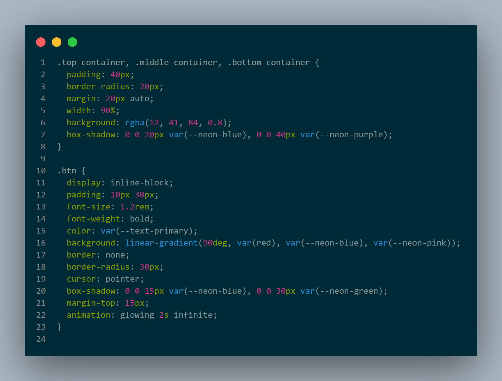
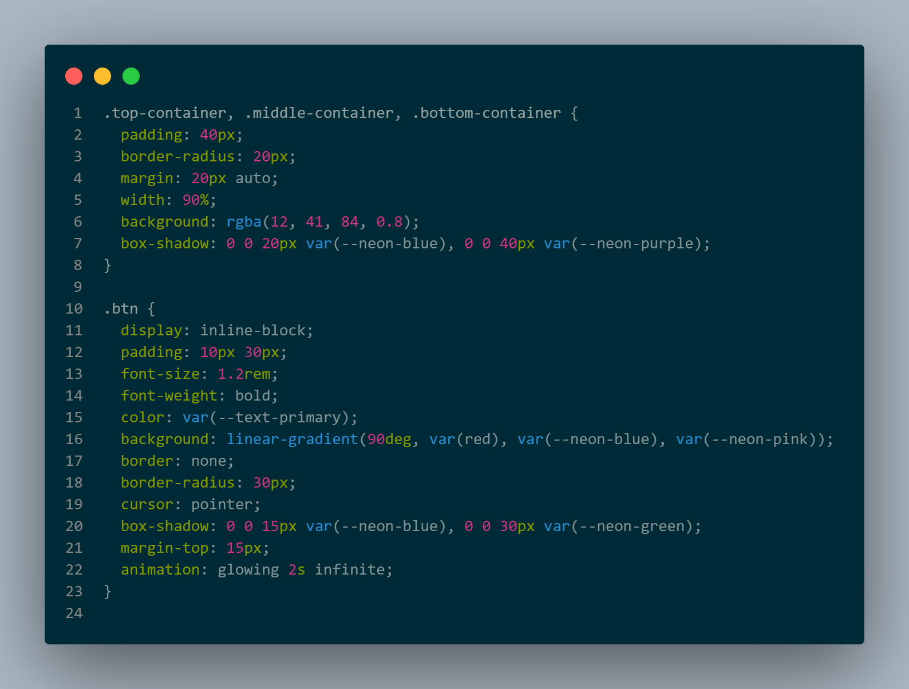

The Web
Introduction
A website is an online space where you can conveniently publish information regarding yourself, your business, or subjects you care about. It's akin to owning a personal area on the internet to display your thoughts and engage with others. Whether you aim to disseminate knowledge, operate an online store, interact with others, acquire new skills, or just enjoy yourself—websites fulfill many functions. To visit a website, users only require a device equipped with a web browser—such as laptops, smartphones, or tablets—along with an internet connection.
Implementation
Website implementation refers to the process of designing, creating, and launching a website to ensure its accessibility on the internet. It consists of several phases, which include: Planning, Developing a framework for the website's layout, inclusive of flowcharts and diagrams. Coding, Composing the programming language for the website. Testing, Verifying that the website operates correctly and resolving any issues. Uploading, Transferring the website to a hosting service. Validating, Confirming the website's compliance. Optimizing, Enhancing the website to boost user experience. Publishing, Releasing the website. Additional steps in the website implementation process involve marketing strategies, ongoing maintenance, and redesign efforts. The time allocated to each phase may differ based on the preferences of the designer. It is crucial not to expedite the website development process, as neglecting essential aspects can negatively affect the website's functionality and user experience.
Hypertext Markup Language (HTML)
HTML, known as HyperText Markup Language, is the coding language that establishes the framework and significance of online content. It serves as the fundamental component of the web and is utilized to instruct web browsers on how to present content on a page. HTML employs markup, which is made up of specific elements contained within tags, to provide annotations to the content. For instance, you may utilize the element to surround text and format it as a paragraph. Additionally, tags can be used to generate hyperlinks, italicize text, and other functions.

HTML Stucture
The composition of an HTML document consists of: DOCTYPE declaration: Initial component of an HTML document, the doctype declaration informs the browser on which XHTML standards to apply. Elements: The fundamental components of a web page, consisting of a start tag, content, and an end tag. Title tag: The title of the web page, that shows up in the browser's title bar or tab. Anchor element: Employed to establish hyperlinks, or clickable links on a web page. HEAD element: Details about the document, including its title and keywords.
Cascading Style Sheets (CSS)
CSS represents Cascading Style Sheets language and is employed to style components written in a markup language like HTML. It distinguishes the content from the visual presentation of the website. The connection between HTML and CSS is closely linked as HTML serves as the fundamental structure of a site while CSS encompasses all the visual aspects of an entire website.
CSS Stucture
CSS is applicable for text styling for instance, for altering the color and size of headings and links. It is useful for establishing a layout for example, transforming a single text column into a design featuring a main content section and a sidebar for associated information. It can also be utilized for effects such as animation.
 

Frameworks

Tailwind CSS
Tailwind CSS is a free CSS framework that helps developers create customized user interfaces. It features a utility-first approach with numerous reusable classes, low-level utility combinations, responsive design, easy customization via the tailwind. config. js file, and encourages developers to purge unused styles for optimal performance.
Bootstrap CSS
Bootstrap is a complimentary front-end framework designed for quicker and simpler web development. Bootstrap features design templates based on HTML and CSS for typography, forms, buttons, tables, navigation, modals, image carousels, and many more, in addition to optional JavaScript plugins.
Materialize CSS
Materialize is the Cloud Operational Data Store that provides the quickness of streaming combined with the simplicity of a data warehouse. By using Materialize, organizations can utilize SQL to modify, distribute, and respond to rapidly changing data.
JavaScript
JavaScript is a scripting or programming language that enables you to incorporate intricate features on web pages whenever a web page performs more than simply remaining still and showing static information for you to observe presenting timely content updates, interactive maps, animated 2D/3D graphics, scrolling video jukeboxes, and so on.
Why use JavaScript?
What is the goal of utilizing JavaScript? JavaScript (JS) is a multi-platform, object-oriented programming language employed by programmers to render web pages interactive. It enables developers to produce content that updates dynamically, implement animations, create pop-up menus, clickable buttons, manage multimedia, and so forth.

Frameworks
React js
A JavaScript library concentrated on the frontend utilizing creating both single-page and multi-page interfaces, stands as one of the most favored programming technologies globally, and the increasing number of companies adopting it demonstrates its strong foothold.
Three js
Three. js is a JavaScript library and application programming interface (API) that works across different browsers and is utilized to create and render animated 3D computer graphics within a web browser employing WebGL.
Vite js
lets you set up a development environment for Vue, TezJS, and React frameworks. Additionally, with the use of Vite JS, you can create an exceptionally fast Single-page Application and connect it with other back-ends. Furthermore, it also offers support for Server-side Rendering (SSR).
History
Tim Berners-Lee created the World Wide Web while employed at CERN in 1989. He suggested a "universal linked information system" utilizing various concepts and technologies, the essential of which was the relationships that existed among information. He constructed the first web server, the first web browser, and a document formatting standard known as Hypertext Markup Language (HTML). Following the publication of the markup language in 1991, and the release of the browser source code for public access in 1993, numerous other web browsers were quickly developed, with Marc Andreessen's Mosaic, being especially user-friendly and simple to install, and frequently recognized for initiating the Internet boom of the 1990s. It was a graphical browser that operated on several widely used office and home computers, delivering multimedia content to non-technical users by incorporating images and text on one page.

In conclusion, websites play an essential role in modern communication, commerce, and entertainment. Understanding HTML, CSS, and JavaScript is fundamental to creating effective and engaging web experiences.